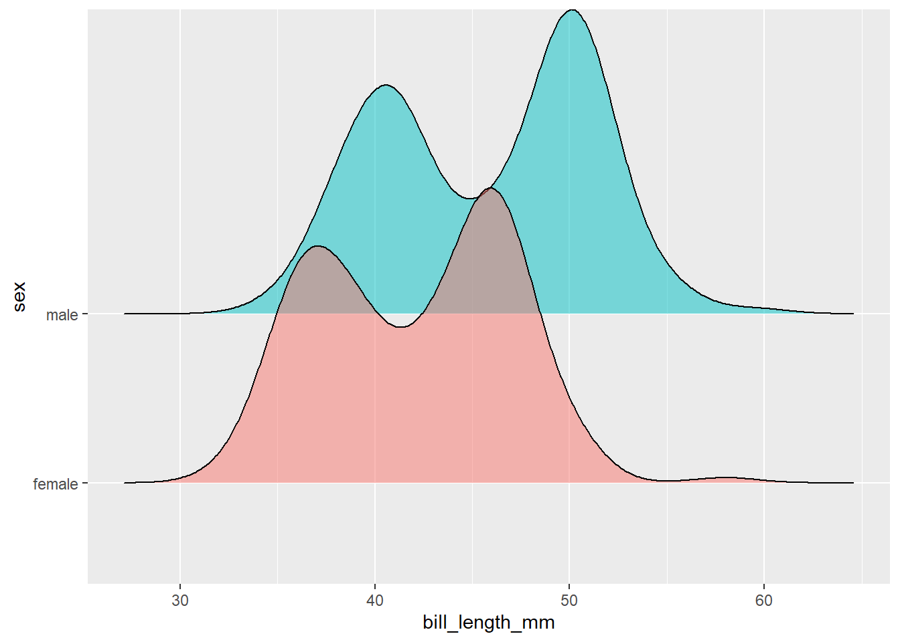
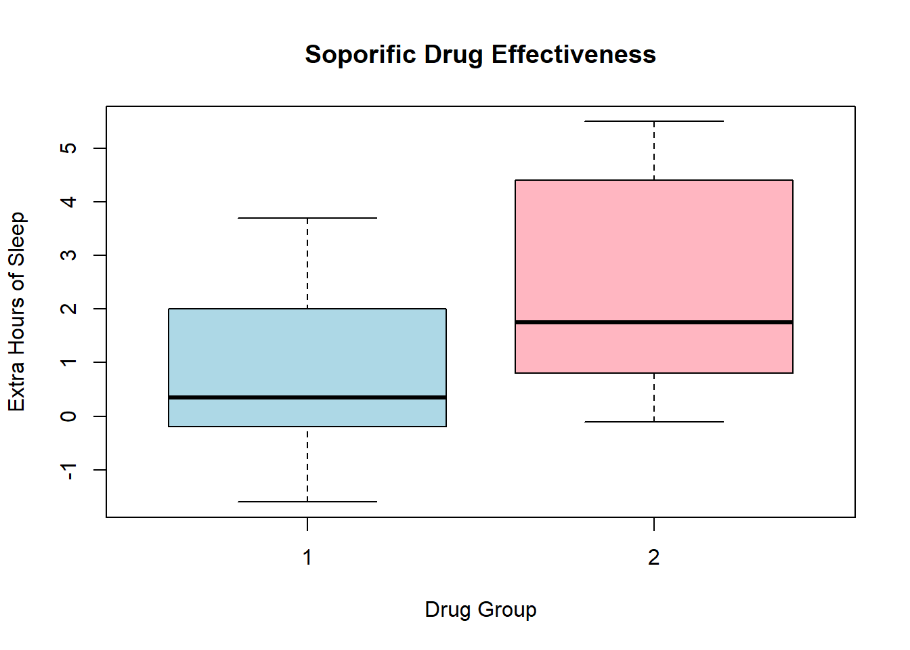
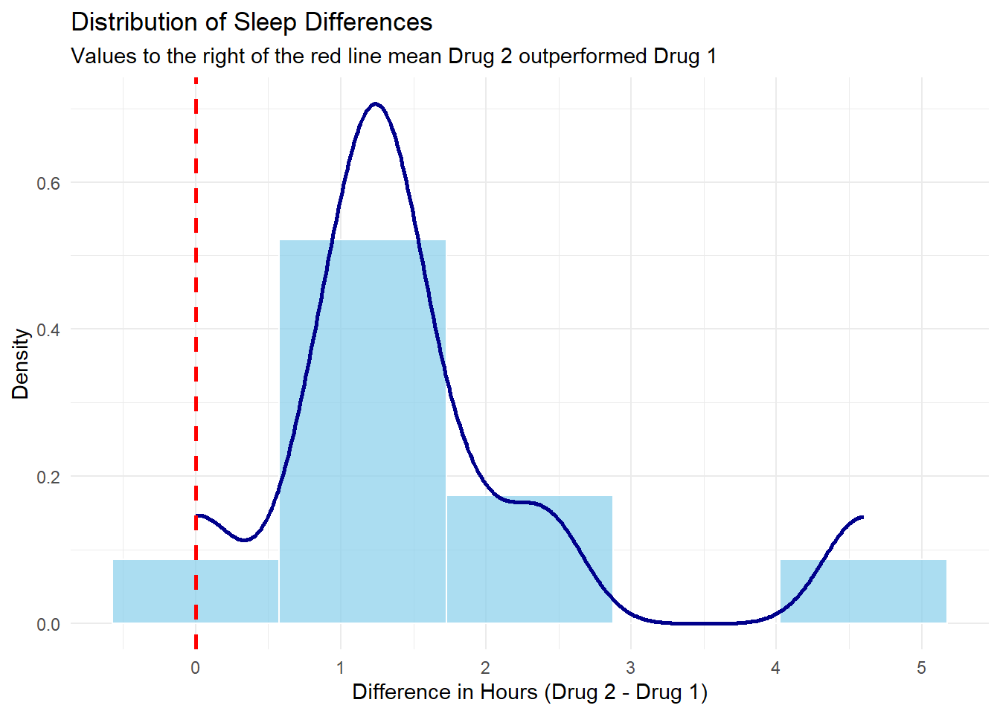

# Adding libraries for basic visualizationslibrary(ggplot2)
Warning: package 'ggplot2' was built under R version 4.4.3
library(gtsummary) library(tidyverse)
Warning: package 'tidyr' was built under R version 4.4.3
Warning: package 'dplyr' was built under R version 4.4.3
── Attaching core tidyverse packages ──────────────────────── tidyverse 2.0.0 ──
✔ dplyr 1.1.4 ✔ readr 2.1.5
✔ forcats 1.0.0 ✔ stringr 1.5.1
✔ lubridate 1.9.4 ✔ tibble 3.2.1
✔ purrr 1.0.4 ✔ tidyr 1.3.1
── Conflicts ────────────────────────────────────────── tidyverse_conflicts() ──
✖ dplyr::filter() masks stats::filter()
✖ dplyr::lag() masks stats::lag()
ℹ Use the conflicted package (<http://conflicted.r-lib.org/>) to force all conflicts to become errors
library(ggridges)
Warning: package 'ggridges' was built under R version 4.4.3
library(janitor)
Warning: package 'janitor' was built under R version 4.4.3
Attaching package: 'janitor'
The following objects are masked from 'package:stats':
chisq.test, fisher.test
library(rstatix)
Warning: package 'rstatix' was built under R version 4.4.3
Attaching package: 'rstatix'
The following object is masked from 'package:janitor':
make_clean_names
The following object is masked from 'package:stats':
filter
library(gt)library(exact2x2)
Warning: package 'exact2x2' was built under R version 4.4.3
Loading required package: exactci
Warning: package 'exactci' was built under R version 4.4.3
# A tibble: 6 × 8
species island bill_length_mm bill_depth_mm flipper_length_mm body_mass_g
<fct> <fct> <dbl> <dbl> <int> <int>
1 Adelie Torgersen 39.1 18.7 181 3750
2 Adelie Torgersen 39.5 17.4 186 3800
3 Adelie Torgersen 40.3 18 195 3250
4 Adelie Torgersen NA NA NA NA
5 Adelie Torgersen 36.7 19.3 193 3450
6 Adelie Torgersen 39.3 20.6 190 3650
# ℹ 2 more variables: sex <fct>, year <int>
Two-Sample T-Test
When: continuous outcome variable, two independent groups in predictor, and independence between observations.
Assumptions: normal distribution of outcomes in each group, and variances in each group are similar.
Null Hypothesis: The population difference in mean bill length (mm) between the female and male groups of penguins is 0.
\(H_0: \mu_{female} - \mu_{male} = 0\)
Alternative Hypothesis: The population difference in mean bill length (mm) between the female and male groups of penguins is statistically different from 0.
\(H_0: \mu_{female} - \mu_{male} \ne 0\)
# Cleaning the dataset for sake of exampleclean_penguins =na.omit(penguins)# Assuming independence of observations# Observing normal distribution of groupsggplot(data = clean_penguins,aes(x = bill_length_mm,y = sex,fill = sex)) +geom_density_ridges(alpha =0.5, # changes opacityshow.legend =FALSE# removes the key to the right )
Picking joint bandwidth of 1.66

# Using the Central Limit Theorem as n for each group is > 164# Checking variancessumstats <- clean_penguins %>%group_by(sex) %>%get_summary_stats(type ="mean_sd") sumstats %>%gt()
sex
variable
n
mean
sd
female
bill_length_mm
165
42.097
4.903
female
bill_depth_mm
165
16.425
1.796
female
flipper_length_mm
165
197.364
12.501
female
body_mass_g
165
3862.273
666.172
female
year
165
2008.042
0.814
male
bill_length_mm
168
45.855
5.367
male
bill_depth_mm
168
17.891
1.863
male
flipper_length_mm
168
204.506
14.548
male
body_mass_g
168
4545.685
787.629
male
year
168
2008.042
0.814
# Performing the testt.test(bill_length_mm ~ sex, data = penguins, var.equal =TRUE)
Two Sample t-test
data: bill_length_mm by sex
t = -6.667, df = 331, p-value = 1.094e-10
alternative hypothesis: true difference in means between group female and group male is not equal to 0
95 percent confidence interval:
-4.866557 -2.649027
sample estimates:
mean in group female mean in group male
42.09697 45.85476
Results: p-value = 1.094e-10
Using alpha = 0.05, there is sufficient evidence that the population difference in mean bill length (mm) between male and female penguins is different from 0 (p < 0.001). The mean bill length was 42.1 mm (SD = 4.9 mm) and 45.9 mm (SD = 5.4 mm) for the female and male groups, and the difference of 3.8 mm was statistically different.
Wilcoxon Rank-Sum (Mann-Whitney)
# Assuming that the distribution isn't normal enough for both groups for sake of example:wilcox.test(bill_length_mm ~ sex, data = penguins)
Wilcoxon rank sum test with continuity correction
data: bill_length_mm by sex
W = 8178, p-value = 9.901e-11
alternative hypothesis: true location shift is not equal to 0
Paired T-Test
# Adding a dataset that has data that's worth applying a paired t-test to:# Same 10 IDs were tested with both drug types.head(sleep)
extra group ID
1 0.7 1 1
2 -1.6 1 2
3 -0.2 1 3
4 -1.2 1 4
5 -0.1 1 5
6 3.4 1 6
# Observing data in a plotboxplot(extra ~ group, data = sleep, main ="Soporific Drug Effectiveness",xlab ="Drug Group", ylab ="Extra Hours of Sleep",col =c("lightblue", "lightpink"))

# And performing the paired t-testwith(sleep, t.test(extra[group ==1], extra[group ==2], paired =TRUE))
Paired t-test
data: extra[group == 1] and extra[group == 2]
t = -4.0621, df = 9, p-value = 0.002833
alternative hypothesis: true mean difference is not equal to 0
95 percent confidence interval:
-2.4598858 -0.7001142
sample estimates:
mean difference
-1.58
# Note: "with()" is called an environment wrapper. It tells R to look inside 'sleep' for the variables that are mentioned inside of it. This option makes it so we don't have to type sleep$extra each time. # "extra[group == 1]" tells R "the 'extra' variable, where the condtion group == 1 is TRUE"
Wilcoxon Signed-Rank
# Graphing distribution of differencessleep_diff_tidy <- sleep %>%mutate(group =paste0("drug_", group)) %>%# Renames 1 and 2 to drug_1 and drug_2pivot_wider(names_from = group, values_from = extra) %>%mutate(difference = drug_2 - drug_1)ggplot(sleep_diff_tidy, aes(x = difference)) +geom_histogram(aes(y =after_stat(density)), bins =5, fill ="skyblue", color ="white", alpha =0.7) +geom_density(color ="darkblue", linewidth =1) +geom_vline(xintercept =0, color ="red", linetype ="dashed", linewidth =1) +labs(title ="Distribution of Sleep Differences",subtitle ="Values to the right of the red line mean Drug 2 outperformed Drug 1",x ="Difference in Hours (Drug 2 - Drug 1)",y ="Density" ) +theme_minimal()

# Assuming the differences between ours pairs are NOT NORMALLLY DISTRIBUTEDwith(sleep, wilcox.test(extra[group ==1], extra[group ==2], paired =TRUE, exact =FALSE))
Wilcoxon signed rank test with continuity correction
data: extra[group == 1] and extra[group == 2]
V = 0, p-value = 0.009091
alternative hypothesis: true location shift is not equal to 0
# Applying exact = FALSE because patient 5 showed 0 change between drugs and patients 3 and 4 had the exact same difference between their drugs.
One-Way ANOVA
For performing a continuous outcome between 3+ groups.
# Checking distribution and sample sizeggplot(data = penguins,aes(x = bill_length_mm,color = species)) +# Note that we put 'color' here instead of 'y'geom_density()
Warning: Removed 2 rows containing non-finite outside the scale range
(`stat_density()`).
table(penguins$species)
Adelie Chinstrap Gentoo
152 68 124
# Performing an anova, given n > 60 for each group and normal-appearing distributionspeng_anova <-aov(bill_depth_mm ~ species,data = penguins)summary(peng_anova)
Df Sum Sq Mean Sq F value Pr(>F)
species 2 904.0 452.0 359.8 <2e-16 ***
Residuals 339 425.9 1.3
---
Signif. codes: 0 '***' 0.001 '**' 0.01 '*' 0.05 '.' 0.1 ' ' 1
2 observations deleted due to missingness
Kruskal-Wallis
For performing a continuous outcome between 3+ groups when anova assumptions are violated.
# Assuming these species' bill depths violate normal distribution# From the graph above and sample sizes, this isn't the case, but performing this test as an example. kruskal.test(bill_depth_mm ~ species,data = penguins)
Kruskal-Wallis rank sum test
data: bill_depth_mm by species
Kruskal-Wallis chi-squared = 224.56, df = 2, p-value < 2.2e-16
Pearson Correlation
For measuring the strength of a linear relationship between two quantitative & continuous variables.
# Visualizing the relationshipggplot(data = penguins,aes( x = bill_depth_mm,y = body_mass_g)) +geom_point() +geom_smooth(method ="lm")
`geom_smooth()` using formula = 'y ~ x'
Warning: Removed 2 rows containing non-finite outside the scale range
(`stat_smooth()`).
Warning: Removed 2 rows containing missing values or values outside the scale range
(`geom_point()`).
Pearson's product-moment correlation
data: bill_depth_mm and body_mass_g
t = -9.8699, df = 340, p-value < 2.2e-16
alternative hypothesis: true correlation is not equal to 0
95 percent confidence interval:
-0.5504192 -0.3851403
sample estimates:
cor
-0.4719156
# Note that this is a Simpson's Paradox. The species groups each have a positive correlation between bill depth and body mass, but together the correlation appears negative.
Spearman Correlation
For measuring the strength of a linear relationship between two continuous variables. Unlike Pearson, however, Spearman is better for monotonic relationships, ordinal data, or skewed data distributions.
data("USJudgeRatings")#We'll be comparing demeanor vs integrity of judges in the US.# Visualizing the relationshipggplot(data = USJudgeRatings,aes( x = INTG,y = DMNR)) +geom_point() +geom_smooth(method ="lm")
Warning in cor.test.default(USJudgeRatings$INTG, USJudgeRatings$DMNR, method =
"spearman"): Cannot compute exact p-value with ties
Spearman's rank correlation rho
data: USJudgeRatings$INTG and USJudgeRatings$DMNR
S = 550.56, p-value < 2.2e-16
alternative hypothesis: true rho is not equal to 0
sample estimates:
rho
0.9584298
Chi-square Test of Independence
For comparing the frequencies of two categorical variables
data("HairEyeColor")# This is a dataset that looks at the hair and eyecolor of a sample of statistics studentshead(HairEyeColor)
, , Sex = Male
Eye
Hair Brown Blue Hazel Green
Black 32 11 10 3
Brown 53 50 25 15
Red 10 10 7 7
Blond 3 30 5 8
, , Sex = Female
Eye
Hair Brown Blue Hazel Green
Black 36 9 5 2
Brown 66 34 29 14
Red 16 7 7 7
Blond 4 64 5 8
# The data needs to be collapsed into a single table that isn't split by sexhair_eye <-margin.table(HairEyeColor, margin =c(1,2))head(hair_eye)
Eye
Hair Brown Blue Hazel Green
Black 68 20 15 5
Brown 119 84 54 29
Red 26 17 14 14
Blond 7 94 10 16
# Then we can run the chisq test to see if hair and eye color are independent.chisq.test(hair_eye)
For comparing the frequencies of two categorical variables when expected cell counts are <5
# We can subset the hair-eye dataset to get smaller expected counts in our cells for an example.hair_eye_small <- HairEyeColor[c("Black", "Blond"), c("Green", "Hazel"), "Female"]head(hair_eye_small)
Eye
Hair Green Hazel
Black 2 5
Blond 8 5
# Running a chisq.test() on a table that's too small will return a warningchisq.test(hair_eye_small)
Warning in stats::chisq.test(x, y, ...): Chi-squared approximation may be
incorrect
Pearson's Chi-squared test with Yates' continuity correction
data: hair_eye_small
X-squared = 0.87912, df = 1, p-value = 0.3484
# In this case, we can then run a Fisher's Exact Test instead!fisher.test(hair_eye_small)
Fisher's Exact Test for Count Data
data: hair_eye_small
p-value = 0.3498
alternative hypothesis: true odds ratio is not equal to 1
95 percent confidence interval:
0.01858382 2.47022220
sample estimates:
odds ratio
0.2689102
McNemar’s Test
For paired data with a categorical outcome.
# Making an example dataset for this option:sentiment <-matrix(c(5254, 899, 348, 8881),nrow =2,dimnames =list("Before Class"=c("Understanding", "Confused"),"After Class"=c("Understanding", "Confused") ))sentiment
After Class
Before Class Understanding Confused
Understanding 5254 348
Confused 899 8881
# Running the testmcnemar.test(sentiment)
McNemar's Chi-squared test with continuity correction
data: sentiment
McNemar's chi-squared = 242.58, df = 1, p-value < 2.2e-16
Exact McNemar
For paired data with a categorical outcome, but when discordant pairs (understanding -> confused and vice versa) add up to less than 25
# Making an example dataset for this option:sentiment_xs <-matrix(c(5, 8, 3, 8),nrow =2,dimnames =list("Before Class"=c("Understanding", "Confused"),"After Class"=c("Understanding", "Confused") ))sentiment_xs
After Class
Before Class Understanding Confused
Understanding 5 3
Confused 8 8
mcnemar.exact(sentiment_xs)
Exact McNemar test (with central confidence intervals)
data: sentiment_xs
b = 3, c = 8, p-value = 0.2266
alternative hypothesis: true odds ratio is not equal to 1
95 percent confidence interval:
0.06407626 1.56241111
sample estimates:
odds ratio
0.375